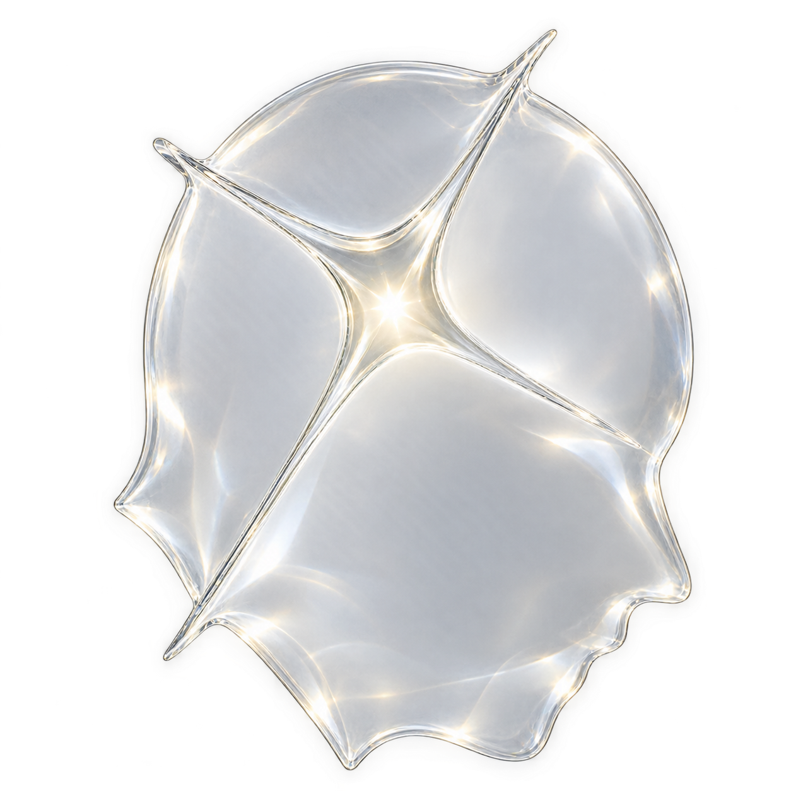

Landing pages
High-conversion pages designed to give your brand a stronger first impression.
AwterSpacer Dev Ops
Digital experiences, websites, and brand systems for ideas with somewhere better to go.
Capabilities
We combine visual direction, thoughtful interaction, and dependable technology to create digital spaces that feel unmistakably yours.
High-conversion pages designed to give your brand a stronger first impression.

Clear, credible, and scalable websites that give your business a proper digital home.

Visual foundations that help your identity stay consistent across every digital touchpoint.

Interfaces that feel intuitive, polished, and intentional from the first interaction.

Purposeful movement and responsive details that give digital experiences their energy.

Reliable infrastructure, launch support, and workflows built for growth after the website goes live.
Selected work
From first impression to final interaction, every detail has a purpose.

Brand identity · Campaign
A high-impact promotional visual direction designed to turn everyday bakery offers into bright, clear, scroll-stopping moments.
Explore project
Web design · Development
A clear, responsive digital home built to make a growing business easier to understand, trust, and choose.
Explore project
Motion · Digital identity
A flexible identity system built with movement principles for digital launches, campaigns, and future brand expression.
Explore project
Systems · DevOps
A maintainable deployment workflow built for dependable releases, clearer operations, and future growth.
Explore projectBuilt for momentum
AwterSpacer brings together visual clarity, thoughtful interaction, and dependable implementation so your digital presence can move people toward the next step.
01
Strong visual hierarchy and messaging that help visitors understand what you offer, quickly.
02
Consistent design systems and responsive experiences built to make a business feel credible at every screen size.
03
A clean technical foundation for future pages, campaigns, integrations, and improvements.
Plans
Flexible starting points for brands ready to look, feel, and operate differently.
For a focused beginning
A polished landing page for an offer, product, personal brand, or upcoming release.
For growing businesses
A complete website and design system for a business ready to create a stronger digital presence.
For ambitious ideas
A custom digital experience combining strategy, identity, interaction, engineering, and ongoing evolution.
How we work
01
We define the opportunity, audience, goals, priorities, and the problem your digital presence needs to solve.
02
We turn strategy into a visual and structural direction that gives every screen a purpose.
03
We develop the experience with clean, responsive, maintainable code and careful attention to performance.
04
We prepare the site, configure its deployment, test the essentials, and take it live with confidence.
05
We support the next iteration through improvements, new pages, campaign work, and scalable systems.
The AwterSpacer mindset

About AwterSpacer
AwterSpacer creates websites, digital experiences, and visual systems for brands that refuse to look like everyone else.
Every visual and structural choice should make the message clearer and the experience stronger.
Strong creative work deserves a reliable technical foundation.
Motion and feedback should make a product feel alive, not distracted.
Your digital space should be ready for the version of your brand that comes next.
Start a project
Have something worth building? Tell us about the idea, the goal, and where you want to go next.